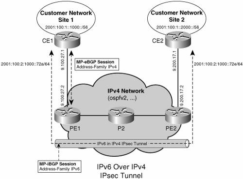
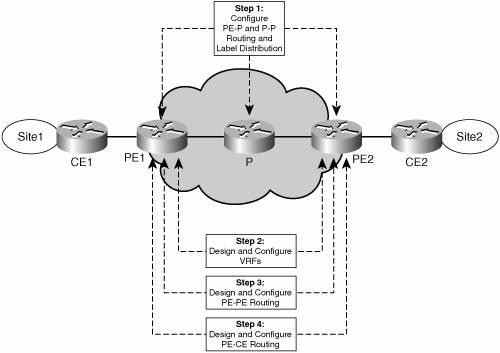
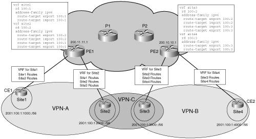
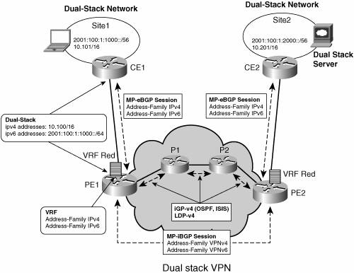
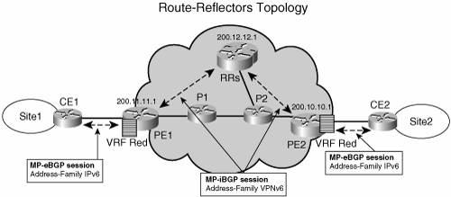
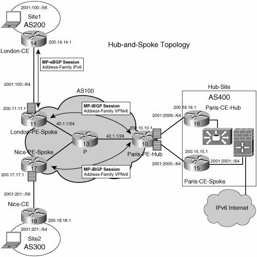
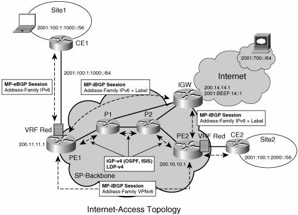
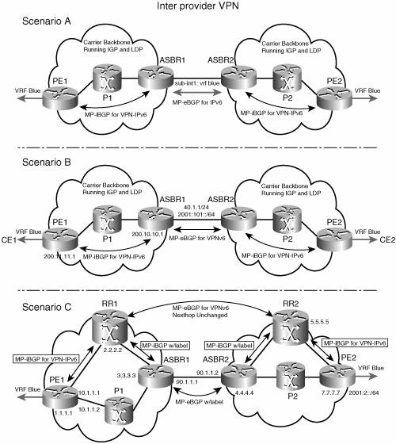
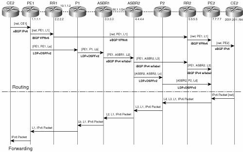

Topology ExamplesThis section provides VPNv6 topology examples and relevant configurations. The first one is a CE-based VPNv6 example; the remaining examples are PE-based BGP-MPLS IPv6 VPN topologies, starting with a basic topology, then moving forward to more complex cases such as dual-stack VPNs, route reflectors, hub and spoke, Internet access, and inter-AS. Using IPsec to Secure IPv6 over an IPv4 TunnelIn this example, a preexisting IPv4 IPsec tunnel is used to create an IPv6 VPN. The tunnel type used is an IPv6 manually configured. Figure 7-7 illustrates the relevant topology. Figure 7-7. Multiprotocol VRFExample 7-14 shows CE1's (Figure 7-7) configuration. The key elements of the configuration are preceded by highlighted comments. Example 7-14. IPv6 over IPv4 IPsec Tunnel Configuration
Basic MPLS VPNv6 TopologyThe basic MPLS VPNv6 topology corresponds to an SP connecting two customer sites over its MPLS backbone. Figure 7-8 shows the steps necessary to design and configure the MPLS IPv6 VPN in the provider network. Figure 7-8. Steps for Configuring the Provider Routers to Enable MPLS VPNv6Step 1 focuses on configuring the core MPLS network. This is not needed if the core network already runs MPLS to provide VPNv4 service. For details on how to set up an MPLS network, refer to the book MPLS and VPN Architectures. Step 2 is driven by the customer needs and requirements. Typically, a new customer triggers the design and configuration of one or more VRFs per PE routers facing customer sites. The VRF configuration is essentially a matter of network design, similar to what is involved in configuring VRFs for VPNv4. VRF design is an important part of a migration scenario for those SPs that want to offer a VPNv6 service to their VPNv4 enterprise customers. Dual-stack VPNs are covered in a subsequent topology example, and the migration scenario is studied in detail in Chapter 13. Figure 7-9 shows a basic VRF configuration, where each PE (PE1 and PE2) is attached to two sites, and three VPNs are designed (VPN-A, VPN-B and VPN-C). Figure 7-9. Basic VRF ConfigurationStep 3 involves peering the PEs together. In the simple case, this is accomplished by a direct PE-PE peering. More often, however, this is done via one or more route reflectors. In the following example, the MPLS core network is IPv4 based, and the iBGP peer endpoints are IPv4 loopback (/32) addresses, configured at each PE and distributed by the IGP (OSPF, for instance) inside the provider network. Example 7-15 illustrates the relevant configuration at PE1 (Figure 7-9). Example 7-15. BGP VPNv6 Peering Configuration
Step 4 involves configuring routing between the PE and the CE. The simplest option is to configure static routes on the PE, using the ipv6 route command. With this command, you have the option of specifying the VRF in which it applies, as well as the next hop. You have several options when choosing the next hop:
Static routes are useful in deployments that involve stub sitesthat is, sites with only one access interface to the SP. After static routes have been configured at the PE, they must be redistributed into MP-BGP, using the redistribute command shown in Example 7-16. Example 7-16. Redistributing Static Route into BGP VRF
Another option is to use eBGP between the PE and the CE. This option is attractive because all routes learned from the PE are automatically redistributed to remote PEs and then to CEs participating in a given VPN. In the example shown in Figure 7-9, with four sites and three VPNs (VPN-A, VPN-B and VPN-C), you must configure the address family IPv6 for each VRF (site1 and site2 at PE1, site3 and site4 at PE2). Example 7-17 illustrates BGP configuration on PE1. Example 7-17. Using eBGP on the PE-CE Interface
Along with the provider network configuration, the CE routers must be configured. From the CE routers' standpoint, the BGP configuration is a standard eBGP configuration, with no VRF reference. The CE routers also participate in the site routing, and are therefore configured with an IPv6 IGP or static routes, and route redistribution between this IGP and eBGP. Example 7-18 illustrates the corresponding eBGP configuration on CE1 at site1. Example 7-18. eBGP Configuration Example at CE
Dual-Stack VPNsDual-stack VPNs are likely to be predominant in many of the MPLS IPv6 VPN deployment scenarios. As defined earlier, a dual-stack VPN connects IPv4-enabled sites together and IPv6-enabled sites together. In a typical deployment scenario, an MPLS SP will have to enable IPv6 on already-deployed IPv4 VPNs because existing customers will have migrated some or all of their sites to dual stack (IPv4 and IPv6). In such a scenario, the following provisioning steps must be taken:
Figure 7-10 shows the topology of a dual-stack VPN. Figure 7-10. Dual-Stack VPNExample 7-19 illustrates the BGP configuration of a dual-stack VPN (IPv6-related configuration highlighted). Example 7-19. BGP Configuration of Dual-Stack VPN
And Example 7-20 shows the VRF configuration. Example 7-20. Configuration Example of Dual-Stack VRF
Route ReflectorsRoute reflectors are discussed in the "Scaling IPv6 VPN" section. Figure 7-11 shows a simple topology with route reflectors. Figure 7-11. Route Reflectors TopologyExample 7-20 is an example of route reflector configuration. Example 7-21. Route Reflector Configuration Example
Note that no bgp default route-target filter command is necessary on the route reflector, because it does not maintain a VRF table (unless it is also a regular PE), and would not keep any entry otherwise, as described in the "Scaling IPv6 VPN" section. Another remarkable element of the preceding configuration is that neither the IPv6 address nor IPv6 routing protocol need to be configured at the route reflector, if the SP chooses to deploy it in an IPv4-based backbone (6VPE). The only IPv6 configuration is in the VPNv6 address family under the BGP router configuration. It is still required to enable the address family, however, because route reflection is on a per-AFI/SAFI basis. Hub and SpokeHub-and-spoke topology is one of the most widely deployed network topologies with VPNv4, and there is no reason why it should not be the same with VPNv6. Large corporations, with multiple sites distributed across the SP backbone, may want to centralize services such as Internet access, firewalls, server farms, and so on. To achieve this, a hub site is deployed with all the other sites forwarding traffic to it. Figure 7-12 shows this topology. Figure 7-12. Hub-and-Spoke TopologyExample 7-22 illustrates the BGP configuration of the Paris PE hub router. Example 7-22. BGP VPNv6 Hub-and-Spoke Configuration Example
As shown in Example 7-23, a traceroute command, initiated at one of the spoke sites (London-CE), shows the path used by traffic between spoke sites (the hops are highlighted). Example 7-23. Traceroute Output Throughout the Hub-and-Spoke Topology
Note that P-routers have not been configured with an IPv6 address and must use an IPv4-mapped address (::FFFF:42.1.1, in this example) to source their ICMPv6 "time-exceeded" messages. Internet AccessMost VPN sites require access to the Internet. Internet Draft draft-ietf-l3vpn-rfc2547bis describes in section 11 a set of models for enabling VPN access to the Internet. All these models (1 to 4) apply to IPv6 VPNs, too. Some are straightforward, such as model 1, in which an interface is used by the CE to connect to the Internet and a different one to connect to the VRF. In model 4 of section 11, all Internet routes are redistributed into the VRF. This approach has the disadvantage of requiring the Internet routes to be replicated in each VRF. In the case of model 3, a static route is inserted into the VRF table, with a next hop that points to the Internet gateway, found in the IPv6 default table. Figure 7-13 shows a scenario in which Internet access is provided to the customer in VRF red based on model 3. Figure 7-13. Internet Access TopologyFor outbound traffic, the default route configured in the VRF table (red) at PE1 directs traffic for destinations outside the VPN to the Internet gateway. Example 7-24 shows PE1's relevant configuration in this scenario. Example 7-24. Internet Access: (PE ) Static Route to Internet Gateway
It is expected that this next hop has been advertised by the Internet gateway (for instance, over MP-iBGP), based on the configuration in Example 7-25. Example 7-25. Internet Access: (Internet Gateway) BGP Configuration
For inbound traffic, a route must exist at the Internet gateway to direct the traffic for customer site (site1 in Figure 7-13) via its PE of attachment (PE1 above). Assuming that site1 global prefix is 2001:100:1:1000::/64, the following route in Example 7-26 should be configured on the Internet gateway. Example 7-26. Internet Access: (Internet Gateway) Route to the PE
This route can be distributed by PE1, via MP-iBGP (IPv6 address family), so no specific configuration needs to be done on per-VPN PE basis at the Internet gateway. Nevertheless, for inbound traffic at PE1, a route must exist in the default table, for site1 global prefix (2001:100:1:1000::/64), pointing to site1 VRF. Example 7-27. Internet Access: (PE) Route to Customer Site
Example 7-28 shows the BGP configuration for PE1. Example 7-28. Internet Access: (PE) BGP Configuration Example
Interprovider VPNsThe challenge with interprovider VPNs is similar for IPv6 and IPv4, assuming IPv6 is deployed everywhere IPv4 is. That, however, is not the situation today. In IPv6 deployments crossing AS boundaries, providers have to pick up a peering model. Figure 7-14 shows the interprovider scenarios (A, B, and C, specified in draft-ietf-l3vpn-rfc2547bis, section 10) in the VPNv6 case. Figure 7-14. Interprovider ScenariosDepending on the network protocol used between ASBRs, the three scenarios described in draft-ietf-l3vpn-rfc2547bis, section 10, can face several implementation options. For instance, scenario B, which suggests an MP-eBGP-VPNv6 peering between ASBRs, could use an IPv6 link, or an IPv4 link. The following example illustrates these two cases. If the peering between ASBRs is performed over an IPv4 link, the BGP configuration on ASBR1 is as shown in Example 7-29. Example 7-29. Inter-AS BGP Configuration, Scenario B, ASBRs Peering over IPv4
If the peering between ASBRs is performed over an IPv6 link, the BGP configuration on ASBR1 is as shown in Example 7-30. Example 7-30. Inter-AS BGP Configuration, Scenario B, ASBRs Peering over IPv6
In inter-AS scenario C, multihop MP-eBGP redistributes VPNv6 routes across route reflectors in different autonomous systems. Labeled IPv4 routes to the PEs (in the 6VPE case) need to be advertised across ASBRs so that a complete LSP is set up end to end. Figure 7-15 shows inter-AS scenario C, both routing and forwarding paths. Figure 7-15. Inter-AS Scenario CThe label stack computed at ingress PE (PE2) contains the following labels:
On PE1, you can display the label stack imposed by the forwarding plane (CEF) to reach a destination (2001::2::1) located in remote VRF blue, as shown in Example 7-31. Example 7-31. Inter-AS: Example of Three-Label Stack at the PE (Scenario C)
In Example 7-31, the values of labels Ld, L3, L1 are 20, 19, 22. The commands in the following examples highlight the origin of each label.
Finally, it is possible to understand the recursion process by analyzing in detail the way Cisco Express Forwarding (CEF) has built the label stack, as shown in Example 7-35. Example 7-35. Inter-AS: Label Stack Recursive Resolution
The topology examples discussed in the last sections show the extent of the similarities between VPNv6 and VPNv4. Almost every topology found in the VPNv4 world has a correspondence in the VPNv6 world. The reverse is also true, except where coexistence leads to a more integrated scenario. A full-scale IPv6 MPLS deployment is described in Chapter 13. It integrates some of the configuration examples from this chapter into a complete, end-to-end IPv6 deployment case study. |